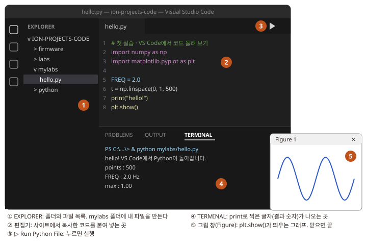
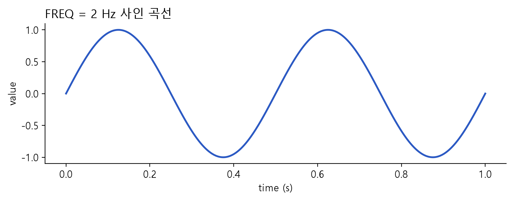

처음 한 번: 내 컴퓨터 준비하기
Python과 VS Code를 깔고, 코드 묶음을 열고, 첫 코드를 ▷ Run 하는 것까지. 코딩을 한 번도 안 해 본 사람 기준으로 적었습니다

무엇을 하나 프로젝트 실습은 모두 VS Code에서 합니다. 사이트의 코드를 복사해 내 파일에 붙여 넣고, 오른쪽 위 ▷를 누르면 결과 숫자가 아래에 찍히고 그래프 창이 뜹니다. 이 페이지에서 그렇게 할 수 있게 준비합니다.
걸리는 시간 30–50분 (참고치). Python·VS Code 내려받기와 package 설치가 가장 오래 걸립니다.
끝나면 p0_install.py를 ▷ 실행해 ready.가 나오고, p0_hello.py를 ▷ 실행했을 때 사인 곡선 그래프 창이 뜨고, run_tests.py를 ▷ 실행했을 때 마지막 줄에 all passed (13)이 보입니다. 그러면 P1으로 갑니다.
왜 VS Code인가. 명령 창에 명령 한 줄만 넣으면 "무엇을 했는지"가 보이지 않습니다. VS Code에서는 코드를 내 파일로 붙여 넣고, 코드 속 설명(주석)을 읽고, 맨 위의 숫자 하나를 바꿔 다시 ▷ 누르면서 결과가 어떻게 바뀌는지 바로 봅니다. 코드를 직접 짜지 않아도 내가 실험을 돌린다는 느낌이 납니다.
Python: 프로그램을 실행해 주는 무료 소프트웨어. 우리 실습 코드는 모두 Python으로 쓰여 있습니다.
VS Code (Visual Studio Code): 코드를 열고, 고치고, ▷로 실행하는 무료 프로그램(편집기). 메모장보다 코드를 보기 좋게 색칠해 주고, 실행 결과도 같은 창 아래에 보여 줍니다.
package: Python에 덧붙이는 기능 묶음. 그래프를 그리는 matplotlib, 계산하는 numpy 등. 한 번만 설치하면 됩니다.
1. Python 설치
이미 깔려 있는지 모르면
그냥 아래대로 설치합니다. 이미 있어도 문제없습니다. 컴퓨터에 Python이 여러 개가 되어도, 나중에 VS Code에서 쓸 것 하나를 고르고 그 Python에 package를 설치하므로 헷갈리지 않습니다.
Microsoft Store에서 받은 Python 3.11 이상이 이미 있으면 그것을 써도 됩니다. 설치 중 Defaulting to user installation…이라는 글자가 나오는 것만 다릅니다(무시해도 됨).
Python 내려받아 설치
할 일
- 브라우저에서 python.org/downloads를 엽니다.
- 노란 Download Python 3.x.x 단추를 누릅니다.
python-3.x.x-amd64.exe같은 파일이다운로드폴더에 저장됩니다. - 그 파일을 더블클릭합니다. "이 앱이 디바이스를 변경하도록 허용하시겠어요?"가 뜨면 예.
- 설치 첫 화면 아래쪽의 "Add python.exe to PATH" 체크 상자를 반드시 켭니다.
- 위쪽의 Install Now를 누르고, 막대가 다 차서 "Setup was successful"이 나오면 Close.
- VS Code가 이미 켜져 있었다면 껐다 켭니다. 새로 깐 Python은 새로 연 창부터 보입니다.
- 버전 확인은 VS Code에서 합니다(Python 고르기에서 목록에
Python 3.x.x가 보이면 설치된 것).
4번 체크를 안 하면 Python은 깔리지만 TERMINAL이 python이라는 말을 못 알아듣습니다(▷ 실행은 VS Code가 Python을 직접 찾아서 대개 괜찮습니다). 빠뜨렸다면 내려받은 설치 파일을 다시 실행해 Modify → Next 화면에서 "Add Python to environment variables"를 켜고 Install.
2. 코드 묶음 받아서 풀기
zip 내려받기
할 일 이 줄의 ion-projects-code.zip을 누릅니다. 브라우저 오른쪽 위에 내려받기 표시가 뜨고, 파일은 보통 다운로드 폴더에 저장됩니다.
바탕화면에 압축 풀기
할 일
- 탐색기(노란 폴더 아이콘)를 열고 왼쪽의 다운로드를 누릅니다.
ion-projects-code.zip에 마우스를 올리고 오른쪽 단추 → 모두 압축 풀기…(Windows 11은 '압축 풀기').- 뜬 창의 찾아보기… → 왼쪽에서 바탕 화면 선택 → 폴더 선택 → 압축 풀기.
바탕화면에 ion-projects-code 폴더가 생깁니다. 더블클릭해서 들어갔을 때 바로 아래 폴더들이 보여야 합니다.
ion-projects-code\
README.md 코드 묶음 설명
firmware\ P3·P4에서 보드에 올리는 코드 (지금은 안 씀)
labs\ VS Code 실습 코드 완성본 (비교용)
python\ 프로젝트 공용 코드들어갔더니 ion-projects-code 폴더가 또 하나 있으면, 폴더가 두 겹으로 풀린 것입니다(압축 풀기 창의 경로 끝에 \ion-projects-code가 붙어 있으면 이렇게 됩니다). 고장은 아닙니다. 앞으로는 안쪽 ion-projects-code(열었을 때 python 폴더가 바로 보이는 쪽)를 씁니다.
zip을 더블클릭만 하면 '미리보기'라서 실행이 안 됩니다. 꼭 압축 풀기를 해서 보통 폴더로 만들어야 합니다. 바탕화면이 아닌 곳에 풀어도 되지만, 그러면 이 사이트의 Desktop 경로가 내 경로와 달라 보입니다(동작은 같음).
3. VS Code 설치하고 코드 묶음 열기
VS Code 내려받아 설치
할 일
- 브라우저에서 code.visualstudio.com에 들어가 파란 Download for Windows 단추를 누릅니다.
- 내려받은
VSCodeUserSetup-….exe를 더블클릭합니다. 동의 → 다음을 누르다가 "추가 작업 선택" 화면에서 PATH에 추가에 체크가 되어 있는지 봅니다(기본으로 체크됨). 나머지는 그대로 다음 → 설치. - 설치가 끝나면 VS Code가 열립니다. 처음 화면(Welcome)은 닫아도 됩니다.
화면 글자가 영어인 것이 정상입니다. 이 사이트도 영어 메뉴 이름(File, Terminal 등)으로 적었습니다. 오른쪽 아래에 "한국어 언어 팩을 설치할까요?"가 떠도 설치하지 않는 편이 따라 하기 쉽습니다.
Python extension 설치 (한 번만)
VS Code가 Python 코드를 실행하게 해 주는 추가 기능입니다.
할 일
- VS Code 왼쪽 세로 줄에서 네모 네 개 모양 아이콘(Extensions)을 누릅니다. 단축키는 Ctrl+Shift+X.
- 위 검색 칸에
python을 칩니다. - 맨 위의 Python (만든 곳: Microsoft, 파란 체크 표시)에서 Install을 누릅니다. 1–2분 걸립니다.
코드 묶음 폴더 열기
할 일
- VS Code 위쪽 메뉴 File → Open Folder…
- 바탕 화면 →
ion-projects-code를 한 번 눌러 고르고 폴더 선택. 고를 폴더는 열었을 때python폴더가 바로 보이는ion-projects-code입니다. 두 겹으로 풀렸다면 바깥 폴더로 한 번 들어가서 안쪽ion-projects-code를 고릅니다. - "Do you trust the authors of the files in this folder?"가 뜨면 Yes, I trust the authors.
- 왼쪽 EXPLORER에
ION-PROJECTS-CODE아래로firmware,labs,python폴더가 보이면 성공입니다.
EXPLORER 맨 위 ION-PROJECTS-CODE 바로 아래에 firmware·python 대신 ion-projects-code 폴더가 또 보이면, 바깥 폴더를 연 것입니다. 이대로 두면 다음 단계 package 설치가 No such file or directory 오류로 실패합니다. File → Open Folder…를 다시 눌러 안쪽 ion-projects-code를 고르세요.
EXPLORER: VS Code 왼쪽의 폴더·파일 목록. 탐색기와 같은 역할입니다. 안 보이면 왼쪽 세로 줄 맨 위의 종이 두 장 아이콘을 누릅니다.
내 실습 폴더 mylabs 만들기
앞으로 사이트에서 복사한 코드는 모두 이 폴더에 내 파일로 만듭니다. labs 폴더에는 같은 코드의 완성본이 들어 있어서, 붙여 넣기가 잘못되었을 때 비교용으로 씁니다.
할 일
- EXPLORER의
ION-PROJECTS-CODE글자에 마우스를 올리면 오른쪽에 작은 아이콘들이 나타납니다. 그중 폴더에 + 표시된 아이콘(New Folder)을 누릅니다. - 이름 칸에
mylabs를 치고 Enter.
ion-projects-code\
firmware\ P3·P4에서 보드에 올리는 코드 (지금은 안 씀)
labs\ 실습 코드 완성본 (비교용)
mylabs\ ← 새로 만든 내 실습 폴더
python\ 프로젝트 공용 코드 (P2–P4에서 씀)4. VS Code가 쓸 Python 고르고 package 설치
VS Code 화면 지도
처음 보는 화면이라 어디를 누를지부터 봅니다. 아래는 설명용 모식도입니다(실제 캡처가 아니라 색·글자 크기는 내 화면과 조금 다릅니다). 메뉴 이름은 영어로 적고 한국어 VS Code의 이름을 괄호에 함께 적었습니다.
- File (파일) → Open Folder… (폴더 열기): 코드 묶음 폴더를 엽니다.
python폴더가 바로 보이는ion-projects-code를 고릅니다. - EXPLORER (탐색기): 폴더·파일 목록.
mylabs폴더를 마우스 오른쪽 단추 → New File… (새 파일) 로 내 파일을 만듭니다. - 상태 표시줄의 Python 버전: 맨 아래 파란 줄 오른쪽.
.py파일을 열어 둔 동안 보입니다. ▷가 실행할 Python이 이것입니다. - ▷ Run Python File (Python 파일 실행): 편집기 오른쪽 위. 옆의 작은 ⌄를 누르면 실행 방법을 고를 수 있습니다.
- TERMINAL (터미널):
print로 찍은 글자와 숫자가 나오는 곳. - Figure 창 (그림 창):
plt.show()가 띄우는 그래프. VS Code 밖에 따로 뜨고, 이 창을 닫아야 프로그램이 끝납니다.
Python interpreter 고르기 (한 번만)
컴퓨터에 Python이 둘 이상 있으면(Microsoft Store판과 python.org판 등), VS Code가 엉뚱한 쪽을 쓸 수 있습니다. 그래서 VS Code가 쓸 Python을 직접 고르고, package도 바로 그 Python에 설치합니다.
interpreter: 코드를 읽어 실행하는 Python 프로그램 하나(python.exe 파일). VS Code에서는 "어느 Python으로 실행할지"를 이렇게 부릅니다.
할 일
- EXPLORER에서
mylabs를 마우스 오른쪽 단추 → New File… →p0_install.py→ Enter. (아무.py파일이나 열려 있어야 아래 명령이 보입니다.) - Ctrl+Shift+P (명령 팔레트) →
select interpreter를 치고 → Python: Select Interpreter (Python: 인터프리터 선택). - 목록에서 Python 3.11 이상을 고릅니다.
Recommended(추천)가 붙은 것이 있으면 그것. 3.12가 두 줄이면 경로에Programs\Python이 있는 쪽(python.org판)을 고르면 됩니다. 어느 쪽이든 다음 단계의 설치를 같은 것으로 하면 됩니다. - 맨 아래 상태 표시줄 오른쪽에
3.12.x같은 버전이 보이면 끝.
- 목록이 비어 있거나 Python이 안 보임 → Python 설치 뒤 VS Code를 완전히 껐다 켭니다. 그래도 없으면 1. Python 설치부터.
Python: Select Interpreter가 목록에 없음 → Python extension이 설치되지 않은 것.
package 설치: 설치 파일을 ▷ (한 번만)
왜 이렇게 하나. TERMINAL에 설치 명령을 넣으면, 그 TERMINAL의 python이 ▷가 쓰는 Python과 다를 수 있습니다. 그러면 설치는 됐는데 실행하면 No module named numpy가 납니다. 아래 파일은 ▷가 실행하는 바로 그 Python에 설치하므로 어긋나지 않습니다.
할 일 앞에서 만든 p0_install.py에 아래 코드를 붙여 넣고(전체 코드 복사 → 편집기 클릭 → Ctrl+V) → Ctrl+S → ▷. 1–3분 동안 글자가 많이 흐릅니다.
mylabs/p0_install.py
# ============================================================
# 준비 · package 설치 (한 번만)
#
# 전체 과정:
#
# 지금 VS Code가 쓰는 Python이 어느 것인지 찍기
# ↓
# 바로 그 Python에 package 설치 (python/requirements.txt 목록)
# ↓
# 설치한 package를 하나씩 불러 보기 → 모두 ok면 준비 끝
#
# 왜 이 파일로 설치하나:
# 컴퓨터에 Python이 두 개 이상 있으면, TERMINAL에서 설치한 Python과
# ▷가 실행하는 Python이 서로 다를 수 있습니다. 그러면 설치했는데도
# "No module named numpy" 오류가 납니다. 이 파일은 ▷가 실행하는 바로
# 그 Python(sys.executable)에 설치하므로 둘이 어긋나지 않습니다.
# ============================================================
import subprocess # 다른 프로그램(pip)을 실행하는 도구
import sys # 지금 실행 중인 Python의 정보
from pathlib import Path # 폴더·파일 경로
# ============================================================
# 1. 지금 쓰는 Python 확인
# ============================================================
print("python :", sys.executable) # ▷가 쓰는 Python 파일 위치
print("version :", sys.version.split()[0]) # 3.11 이상이면 됨
if sys.version_info < (3, 11):
sys.exit("Python 3.11 이상이 필요합니다. 오른쪽 아래 상태 표시줄에서 다른 Python을 고르세요.")
# ============================================================
# 2. 설치할 목록 찾기
# ============================================================
#
# 이 파일은 ion-projects-code\mylabs 안에 있어야 합니다.
# 한 단계 위 폴더(ion-projects-code) 안의 python\requirements.txt를 찾습니다.
CODE = Path(__file__).resolve().parent.parent
REQ = CODE / "python" / "requirements.txt"
print("list :", REQ)
if not REQ.exists():
sys.exit("requirements.txt가 없습니다. VS Code가 연 폴더 바로 아래에 python 폴더가 보이는지 확인하세요.\n"
"압축이 두 겹으로 풀렸다면 File → Open Folder로 안쪽 ion-projects-code를 여세요.")
# ============================================================
# 3. 바로 이 Python에 설치 (1–3분, 글자가 많이 흐릅니다)
# ============================================================
print("\ninstalling … (1-3 min)\n")
r = subprocess.run([sys.executable, "-m", "pip", "install", "-r", str(REQ)])
if r.returncode != 0:
sys.exit("\n설치 실패: 위의 빨간 ERROR 줄을 복사해 질문하세요.")
# ============================================================
# 4. 하나씩 불러 보기
# ============================================================
print("\ncheck:")
ok = True
for name in ["numpy", "scipy", "sklearn", "joblib", "matplotlib", "pyvisa", "serial", "wfdb"]:
try:
__import__(name)
print(f" {name:<11} ok")
except Exception as e: # 하나라도 못 불러오면 이름과 이유를 찍는다
ok = False
print(f" {name:<11} FAILED ({type(e).__name__})")
print("\nready. 다음은 p0_hello.py" if ok else "\nFAILED 줄이 있습니다. 그 줄을 복사해 질문하세요.")PS C:\Users\내이름\Desktop\ion-projects-code> & python mylabs/p0_install.py
python : C:\Users\내이름\AppData\Local\Programs\Python\Python312\python.exe
version : 3.12.10
list : C:\Users\내이름\Desktop\ion-projects-code\python\requirements.txt
installing … (1-3 min)
Collecting numpy
…
Successfully installed joblib-… matplotlib-… numpy-… pyserial-… pyvisa-… scikit-learn-… scipy-… wfdb-…
check:
numpy ok
scipy ok
sklearn ok
joblib ok
matplotlib ok
pyvisa ok
serial ok
wfdb ok
ready. 다음은 p0_hello.py
PS C:\Users\내이름\Desktop\ion-projects-code>맨 아래가 ready.이면 끝입니다. 맨 위 python : 줄의 경로를 기억해 둡니다. 다음 첫 실습에서 같은 경로가 찍히면 설치한 Python과 실행하는 Python이 같다는 확인입니다. 두 번째로 ▷ 하면 설치 대신 Requirement already satisfied가 나오는데, 이미 깔려 있다는 뜻이라 정상입니다.
설치 중에 나오는 글자: 무시해도 되는 것 / 멈춰야 하는 것
| 보이는 글자 | 뜻 | 할 일 |
|---|---|---|
[notice] A new release of pip is available |
pip 새 버전이 있다는 알림 | 무시 |
Defaulting to user installation because normal site-packages is not writeable |
내 사용자 폴더에 설치함 (Microsoft Store판 Python에서 흔함) | 무시 |
WARNING: The script … is installed in '…\Scripts' which is not on PATH |
보조 명령의 위치 안내. 우리 실습은 그 명령을 쓰지 않음 | 무시 |
Requirement already satisfied |
이미 깔려 있음 | 무시 |
ERROR: Could not open requirements file · requirements.txt가 없습니다 |
폴더를 잘못 엶 (압축이 두 겹이면 바깥 폴더를 연 것) | File → Open Folder로 안쪽 ion-projects-code를 열고 다시 ▷ |
ERROR: No matching distribution found · Could not find a version |
인터넷이 끊겼거나, Python이 너무 새것·옛것 | 인터넷 확인. 계속되면 Python 3.12를 골라 다시 |
ERROR: … Permission denied · Access is denied |
다른 프로그램이 파일을 쓰는 중 | VS Code를 껐다 켜고 다시 ▷ |
마지막에 FAILED 줄이 있음 |
그 package만 설치가 안 됨 | 그 줄과 위쪽 빨간 ERROR 줄을 복사해 질문 |
명령 창에 익숙하면 이렇게 해도 됩니다. Terminal (터미널) → New Terminal (새 터미널) → 아래를 붙여 넣고 Enter.
python -m pip install -r python/requirements.txt이때는 TERMINAL의 python이 ▷의 Python과 같은지 직접 확인해야 합니다. python -c "import sys; print(sys.executable)"의 결과가 다음 단계 p0_hello.py가 찍는 python : 경로와 같아야 합니다. 다르면 위의 ▷ 방법으로 설치합니다.
목록에는 실제 장비 단계에서만 쓰는 pyvisa(소스미터), pyserial(보드), wfdb(공개 ECG)도 들어 있습니다. 첫 실습에는 필요 없지만 나누지 않았습니다. 셋 다 몇 초면 설치되는 작은 package이고, 목록을 둘로 나누면 P2.0R·P3에서 "설치를 하나 더" 해야 하는 단계가 생겨 오히려 빠뜨리기 쉽기 때문입니다. 장비 연결 코드는 장비를 실제로 쓸 때만 이 package를 불러옵니다.
5. 첫 실습: 코드 붙여 넣고 ▷ Run
앞으로 모든 실습은 이 카드 하나의 순서를 되풀이합니다. 파일 만들기 → 붙여 넣기 → 저장 → ▷ → 결과 보기.
내 파일 만들기
할 일
- EXPLORER에서
mylabs폴더를 마우스 오른쪽 단추 → New File… - 이름 칸에
p0_hello.py를 치고 Enter. 가운데 편집기에 빈 파일이 열립니다. - 오른쪽 아래에 "Python extension을 설치할까요?"나 "인터프리터를 고르세요" 알림이 뜨면 아래 '다르면'을 봅니다.
코드 붙여 넣고 저장
할 일 아래 코드 상자 오른쪽 위의 복사 아이콘(네모 두 개 겹친 모양, 누르면 ✓로 바뀜)을 누르고, 편집기의 빈 파일을 클릭한 뒤 Ctrl+V. 그다음 Ctrl+S로 저장합니다(파일 이름 옆의 하얀 점 ●이 사라지면 저장된 것).
mylabs/p0_hello.py
# ============================================================
# 첫 실습 · VS Code에서 코드 돌려 보기
#
# 전체 과정:
#
# 숫자 몇 개 계산해서 글자로 찍기 (print) → 아래 TERMINAL에 보임
# ↓
# 사인(sin) 곡선 그리기 (plot) → 그림 창이 따로 뜸
#
# 이 파일이 잘 돌면 준비 끝입니다.
# ============================================================
import sys # 지금 실행 중인 Python의 정보
import numpy as np # 숫자 계산 도구
import matplotlib.pyplot as plt # 그래프 도구
# ============================================================
# 0. 그림 설정 (한글 글꼴) — 모든 실습 파일 맨 위에 똑같이 있습니다
# ============================================================
plt.rcParams.update({
"font.family": "Malgun Gothic", "axes.unicode_minus": False, "font.size": 11,
"legend.frameon": False, "axes.spines.top": False, "axes.spines.right": False,
})
# ============================================================
# 1. 바꿔 볼 수 있는 설정값
# ============================================================
FREQ = 2.0 # 1초에 몇 번 오르내리나 (Hz)
# ============================================================
# 2. 계산하고 글자로 찍기
# ============================================================
t = np.linspace(0, 1, 500) # 0초부터 1초까지 점 500개
y = np.sin(2 * np.pi * FREQ * t) # 사인 곡선
print("hello! VS Code에서 Python이 돌아갑니다.")
print(f"python : {sys.executable} ({sys.version.split()[0]})") # p0_install.py가 찍은 줄과 같아야 함
print(f"points : {len(t)}")
print(f"FREQ : {FREQ} Hz → 1초 동안 {FREQ:g}번 오르내림")
print(f"max : {y.max():.2f}")
# ============================================================
# 3. 그림 그리기
# ============================================================
fig, ax = plt.subplots(figsize=(8, 3.2))
ax.plot(t, y, color="#2b59c3", lw=2)
ax.set_xlabel("time (s)")
ax.set_ylabel("value")
ax.set_title(f"FREQ = {FREQ:g} Hz 사인 곡선", loc="left")
fig.tight_layout()
plt.show() # 그림 창이 뜹니다. 창을 닫으면 프로그램이 끝납니다.코드에서 #로 시작하는 줄은 설명(주석)입니다. 컴퓨터는 읽지 않고 사람만 읽습니다. 코드를 읽을 때는 # ==== 상자로 나뉜 번호 순서대로 보면 됩니다.
▷ 눌러 실행하고 결과 보기
할 일 편집기 오른쪽 위의 ▷ (Run Python File)을 누릅니다.
- 아래 TERMINAL에 VS Code가 실행 명령을 대신 쳐 넣고(첫 줄), 이어서 코드의
print(...)가 찍은 글자가 나옵니다. - 1–3초 뒤 그림 창(Figure 1)이 따로 뜹니다. 작업 표시줄 아래에 숨어 있을 수도 있습니다.
- 그림 창을 닫으면 프로그램이 끝나고 TERMINAL 맨 아래에 다시
PS …>줄이 나옵니다.
PS C:\Users\내이름\Desktop\ion-projects-code> & python mylabs/p0_hello.py
hello! VS Code에서 Python이 돌아갑니다.
python : C:\Users\내이름\AppData\Local\Programs\Python\Python312\python.exe (3.12.10)
points : 500
FREQ : 2.0 Hz → 1초 동안 2번 오르내림
max : 1.00
PS C:\Users\내이름\Desktop\ion-projects-code>
코드 맨 위 FREQ = 2.0을 FREQ = 5.0으로 바꾸고 Ctrl+S → ▷. 그래프가 1초에 다섯 번 오르내리고, TERMINAL의 FREQ 줄도 바뀝니다. 숫자 하나 바꾸고 다시 돌려 보기, 이것이 앞으로 모든 실습에서 하는 일입니다.
- ▷ 단추가 안 보임 → Python extension이 설치되지 않았거나 파일 이름이
.py로 끝나지 않는 것. 위 카드를 다시 확인. 단추 대신 편집기 안에서 마우스 오른쪽 단추 → Run Python → Run Python File in Terminal도 같습니다. - ▷를 눌렀는데 TERMINAL이 아니라 OUTPUT (출력) 칸에 글자가 나오거나
[Running] python -u …로 시작함 → 다른 실행 확장(Code Runner의 Run Code)이 눌린 것입니다. ▷ 옆 ⌄를 눌러 Run Python File을 고르면 그다음부터 그 방법이 ▷에 붙습니다. - ⌄에서 Debug Python File을 눌렀음 → 실행은 되지만 느리고 화면 위에 작은 막대가 생깁니다. 끝나면 막대의 빨간 네모(Stop)를 누르고, 다음부터 Run Python File을 씁니다.
- TERMINAL의
python :경로가p0_install.py가 찍은 경로와 다름 → ▷가 다른 Python을 쓰는 중입니다. Python interpreter 고르기에서 같은 것을 고릅니다. ModuleNotFoundError: No module named 'numpy'→ package 설치를 안 했거나, VS Code가 설치한 것과 다른 Python을 쓰는 것. 지금 고른 Python으로p0_install.py를 한 번 더 ▷ 하면 해결됩니다.- 그림 창이 안 보임 → 작업 표시줄의 Python 로켓/깃털 아이콘을 누릅니다. 그림 창을 닫기 전에는 다음 실행이 안 되니, 창을 꼭 닫습니다.
- 한글이 네모(□)로 나옴 → 코드 맨 위 그림 설정의
"Malgun Gothic"이 지워졌는지 봅니다.
공용 코드가 잘 도는지 시험
P2–P4에서 쓰는 공용 코드가 잘 돌아가는지 스스로 점검하는 파일입니다.
할 일 EXPLORER에서 python 폴더 → run_tests.py를 눌러 열고 ▷. 약 20–40초 걸립니다. 중간에 표가 몇 개 찍히는 것은 시험 과정이라 읽지 않아도 됩니다.
passed: P2 instrument safety: output-off read, limit check, bad input rejected
passed: P2 10-trial run, resume after stop, raw data saved
...
passed: P3 button rhythm memory comparison (synthetic data)
all passed (13). This only tests the code flow, not real instruments or devices.
PS C:\Users\내이름\Desktop\ion-projects-code>마지막에 all passed (13)이 보이면 준비 끝입니다. P1로 갑니다. VS Code를 닫았다가 다음에 다시 열면 마지막에 연 폴더가 그대로 열립니다.
all passed 줄이 나오지 않고 Traceback (most recent call last):로 시작하는 여러 줄과 마지막 …Error: 줄로 끝남 → 시험 하나가 실패한 것입니다. 그 여러 줄을 통째로 복사해 아래처럼 질문합니다.
오류를 질문하는 법 (막혔을 때)
TERMINAL의 글자는 마우스로 끌어 칠한 뒤 Ctrl+C로 복사합니다. 메모장·메신저·AI 채팅 창에 붙여 넣고, "어느 페이지의 어느 실습에서, 어떤 파일을 ▷ 했더니, 이 글자가 나왔다"를 함께 적습니다. 더 자세한 양식은 막혔을 때 질문하는 법에 있습니다.
VS Code의 TERMINAL은 명령 프롬프트와 같습니다. P2–P4의 일부 단계처럼 "명령 한 줄"이 필요할 때는 TERMINAL에 cd python을 넣어 python 폴더로 들어간 뒤(줄 끝이 \python>), 페이지의 명령을 붙여 넣으면 됩니다.